8 Tracks:
Abandon the algos! Seek out what you listen to with intention and share the fruits of your labor!
1. Make a playlist with eight tracks each month or when inspiration strikes.
2. Share with friends!
3. Find new favorites from your friends' lists and break out of your comfort zone~
|
|
|
Jun. 2026 ("Something Must Be Done!")
- Nostalgia - Rhythm Version – Piero Umiliani
- Mum Does the Washing
– Joshua Idehen
- Automatic – Jessie Ware
- Slight Werk – Honey Dijon, Bree Runway
- Mashooqa - From "Cocktail 2"
– Pritam, Mahmood, Raghav Chitanya. Amitabh Bhattacharya, Ruaa Kayy
- Santé
– Stromae
- I'm Confessin' – Fabienne DelSol
- ZENA! – ZENA
|
|
|
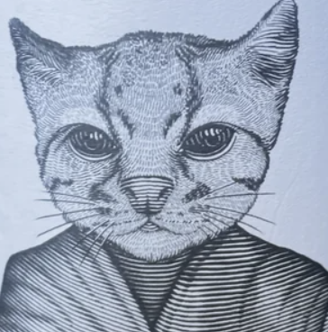
|
May 2026 ("Libiamo!")
- Groovy Flute – Manu Dibango
- Spacesomething – Dumbo Gets Mad
- Hi Ho – Tune-Yards
- La Traviata, Act 1: Libiamo ne'lieti calici "Brindisi" – Giuseppe Verdi, Ileana Cotrubas, Plácido Domingo, Chor der Bayerischen Staatsoper, Bavarian State Orchestra, Carlos Kleiber
- Manin – Charlie Chimi
- Like Coconut Water – BALTHVS
- Celular
– Charlie Chimi
- La Traviata / Act II: "Noi Siamo zingarelle" – Giuseppe Verdi, Helene Schneiderman, Herman Wallen, Wiener Philharmoniker, Carlo Rizzi, Wiener Staatsopernchor, Rupert Huber
|
|
|
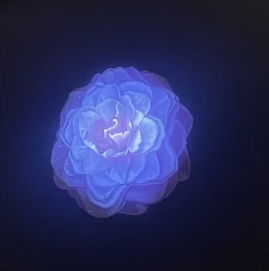
|
Apr. 2026 ("wine all night")
- Ghosts of Gardena – LA LOM
- English Tea – Eaves Wilder
- Pressha – Jill Scott
- I Could Get Used to This – Jessie Ware
- You Wanna Dance Or What? – Joshua Idehen, Tommy McGee
- Everybody Talks – Eaves Wilder
- Hold (Loop) – Max Graef
- Anonymous Club – Courtney Barnett
|
|
|
|
Mar. 2026 ("What could go wrong?")
- Green River – Gene Harris
- Goin' Down – The Mystery Lights
- Still Life – Suitor
- The Ketchup Song (Aserejé) – Spanglish – Las Ketchup
- Ombak, Ombak – Charif Megarbane, Ali
- GO – BLACKPINK
- POP GIRL – Lexie Liu
- Rock Your Baby – George McCrae
|
|
|
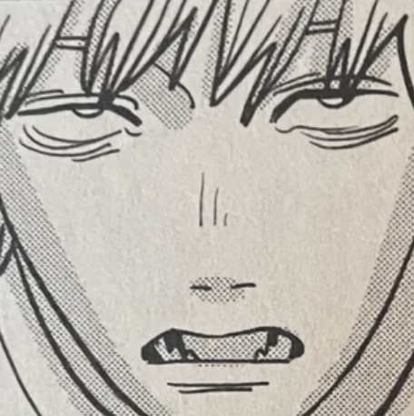
|
Feb. 2026 ("Me sento a'guerra")
- Non sono una signora – Loredana Berté
- Deja el Ayer – Liber Terán
- E Se Livros Fossem Lîquidos_(Poeta Fora da Lei Pt II) – Criolo, Amaro Freitas, Dino d'Santiago
- B Tres – Reverend Baron
- Dream On A Summer Night – Oscar Peterson
- Paan Ki Dukaan – Vishal Bhadwaj, Sukhwin Singh, Rekha Bhardwaj, Gulzar
- Along – GHOSTWOMAN
- I Say I' Sto Ccà – Pino Daniele
|
|
|
|
Jan. 2026 ("bad vibes can't see me")
- Cat Blues – SEATBELTS
- Just A Little Bit – Etta James
- That Thing You Do! – The Wonders
- GD Woman – Kah-Lo
- Beat Me 'Til I'm Blue – Alan Hawkshaw
- Cruise Ship Designer – Dry Cleaning
- Comapany in My Back – Wilco
- A Kiss to Build a Dream On – Louis Armstrong
|
|
|
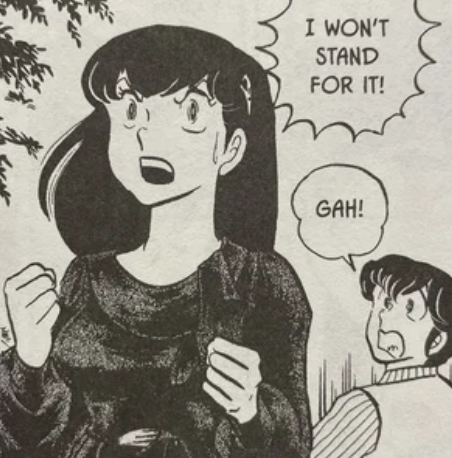
|
Dec. 2025 ("don't remember anyone")
- Dia Azul – Pedro Mizutani
- Do You Want To Know A Secret – The Beatles
- Childhood Dream – Melody's Echo Chamber
- Cool Cat – Queen
- New Long Leg – Dry Cleaning
- Beware Of Darkness – George Harrison
- Redpepper Dragonfly – Cho Yong Pil
- Love To Love You Baby – Donna Summer
|
|
|
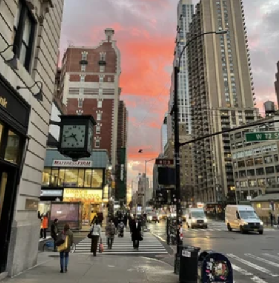
|
Nov. 2025 ("back in the fight")
- Blue Moon - Live – Ahmad Jamal
- Crossroads - Live – Cream
- Funnel Of Love – Wanda Jackson
- Downtown – Destroyer
- Dialogue 5 (Somersaults) - From the Film Harold and Maude – Yusuf / Cat Stevens
- If You Want To Sing Out, Sing Out – Yusuf / Cat Stevens
- Cannock Chase – Labi Siffre
- Blue Moon (encore) - Live – Ahmad Jamal, Yusef Lateef
|
|
|
|
Oct. 2025 ("I stay here still the same")
- 24 Préludes, Op. 28: No. 7 in A Major – Frédéric Chopin, Martha Argerich
- Sophisticated Gentlemen – Ahmad Jamal
- Versión de Mí – maye
- オープニングテーマ – mei ehara
- Do You Love Me Now – The Breeders
- Basket Case – Green Day
- Dirty Work – Steely Dan
- I'm Going Home – Tim Curry
|
|
|
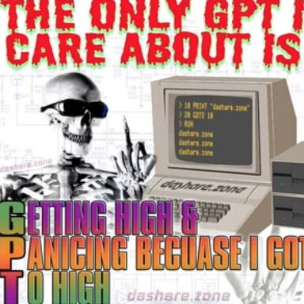
|
Sep. 2025 ("for just a moment")
- Cuando – Ruzzi
- Spacesomething – Dumbo Gets Mad
- Did I Say Too Much – The Beaches
- It Girl – Kah-Lo, Karma Fields, Associanu
- Cortex – El Michels Affair
- Last Girls At The Party – The Beaches
- No Joy – The Beths
- Dastaan - E - Om Shanti Om – Vishal-Shekhar, Shaan
|
|
|
|
Aug. 2025 ("Revenge! I'm mad!")
- Mon Oncle (from "Mon Oncle") – Frank Barcellini
- "你快樂 (所以我快樂)" – Faye Wong
- E Depois – BiD, Seu Jorge Simz
- Nights – Totally Mild
- The Payback – James Brown
- EM20 CH Alterna 04 – Shiro SAGISU
- 掙脫 – Faye Wong
- Janaab-e-Aali – Pritam, Sachet Tandon, Saaj Bhatt, Amitahbh Bhattacharya
|
|
|
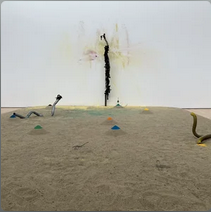
|
Jul. 2025 ("sugar, honey, iced tea")
- Mambo No. 5 – Pérez Prado
- dream girl – Yaya Bey
- pokemon – Wet Leg
- Yo Me Consiento – maye
- Relationships – HAIM
- pond song – Wet Leg
- Feisty – Smerz
- Tropicoqueta – KAROL G
|
|
|
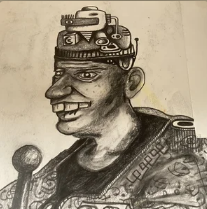
|
Jun. 2025 ("it ain't over")
- Imagine this – Smerz
- Breaking Point – Brandee Younger
- Only – Little Simz, Lydia Kitto
- Get Gone – BRONCHO
- 'I'm Not Done' (Therapy Session) – Fever Ray
- Scoop – Madeline Kenney
- Girls Just Want to Have Lunch – "Weird Al" Yankovic
- Diving Woman – Japanese Breakfast
|
|
|
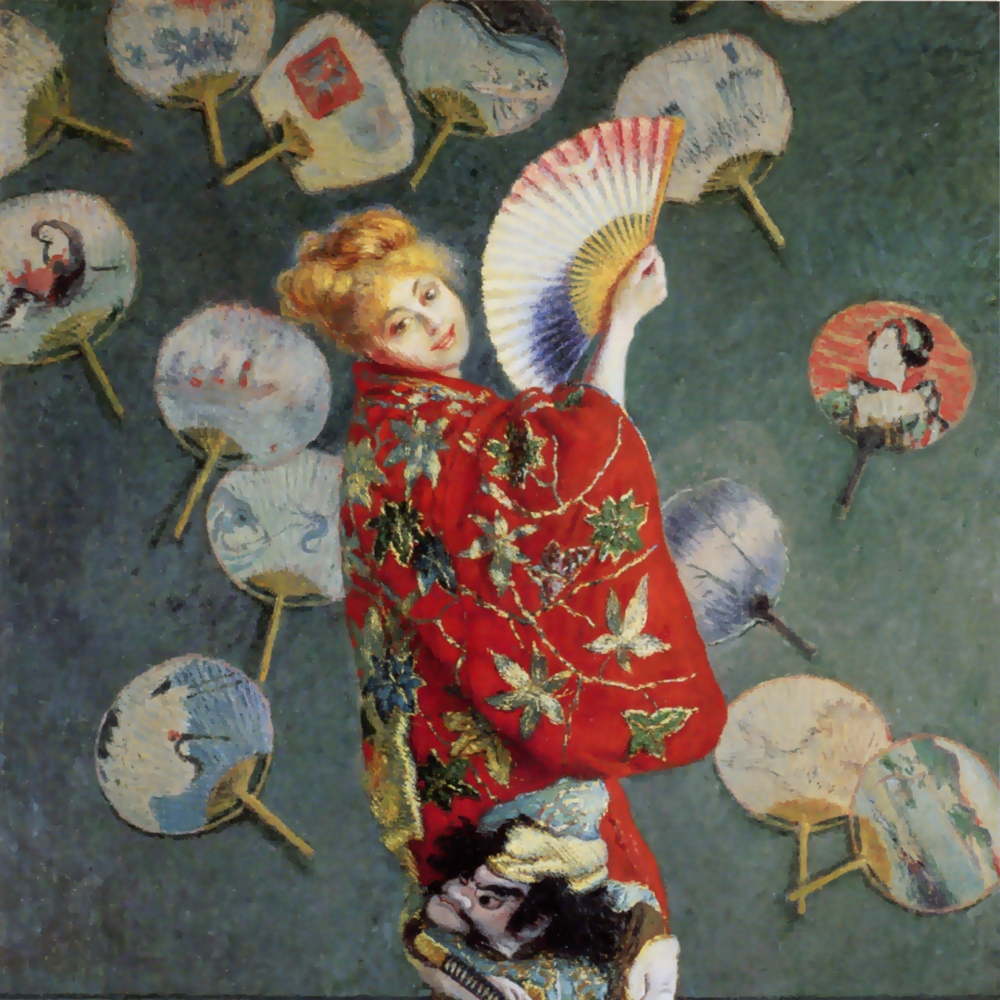
|
May 2025 ("I Don't Mind")
- 20191215 – Mac DeMarco
- Cocos en la Playa – Natalia Lafourcade
- Honey Water – Japanese Breakfast
- What Do I Know – Deep Sea Diver
- Melodie Is A Wound – Stereolab
- For: You – Kali Uchis
- Bovine Excision – Samia
- I Love You Always Forever – Donna Lewis
|
|
|
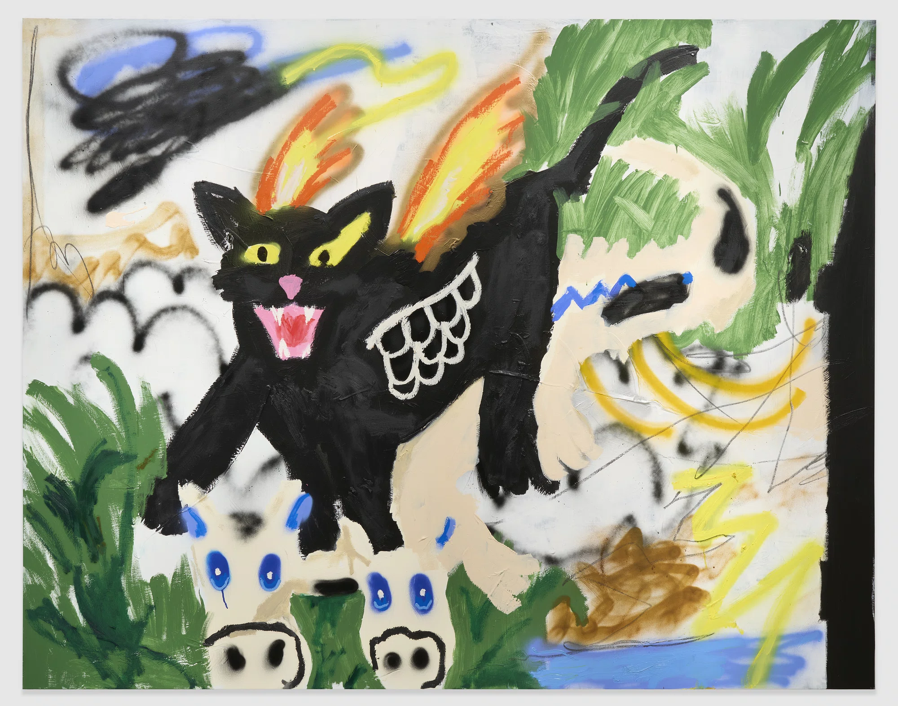
|
Apr. 2025 ("at least it's the truth")
- Hielo Seco – Adrian Quesada, Money Mark, Marc Ribot
- I Come with Mud – Men I Trust
- La FUENTE L'AMAPOLA – Queralt Lahoz
- Talk To You – Daughter of Swords
- **PSILOCYBIN & DAISIES** – Jessie Reyez
- Strange – Daughter of Swords
- Catch These Fists – Wet Leg
- **I NEVER SAID I WAS SANE** – Jessie Reyez, Lekan, Saint Harison
|
|
|
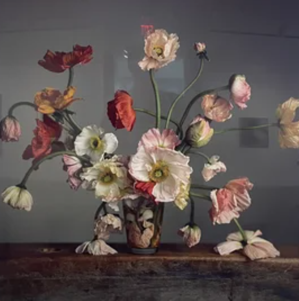
|
Mar. 2025 B ("caught your breath")
- La Maga – Onda Vaga
- ..THUS IS WHY (I DON'T SPRING 4 LOVE) – Saya Gray
- Mega Circuit – Japanese Breakfast
- OMW – Michi
- Fever Pitch – Divorce
- Handlebars – JENNIE, Dua Lipa
- Lifestyle – LISA
- Tres Palabras – Sullivan Fortner
|
|
|
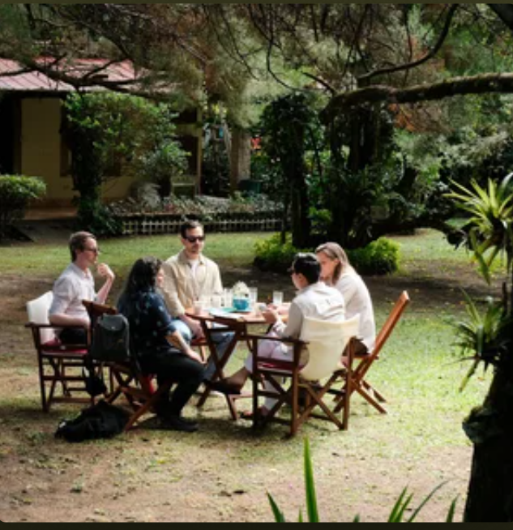
|
Mar. 2025 A ("nothing on my mind")
- Thank Goodness – Hope Tala
- Lose it All – SASAMI
- Moonlit Floor (Kiss Me) – LISA
- Keep it Warm – Flo & Eddie
- Ferry Lady – Panda Bear
- S.N.C – DARKSIDE
- Be Sweet – Deep Sea Diver
- In Love with A Memory – SASAMI, Clairo
|
|
|
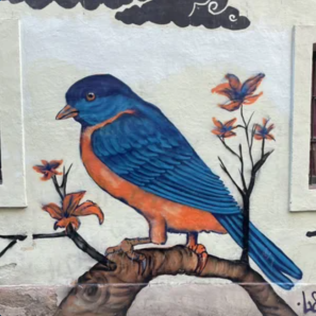
|
Feb. 2025 ("on the way")
- Chevy To Levvy – Jim Noir
- Rock DJ – Robbie Williams
- I Can't Imagine (Why You Feel This Way) – Sharon Van Etten
- La Fiesta – shego
- Bistro (demo) – Madvillain, Madlib, MF DOOM
- Lejos de Ti – The Marias
- A Gira – Trio Ternura
- One for You, One for Me – La Bionda
|
|
|
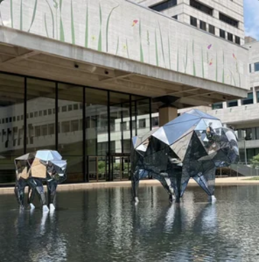
|
Jan 2025 B ("but we won't")
- Orlando in Love – Japanese Breakfast
- Manakins – Mac Miller, Dylan Reynolds
- Mntanami – Moonchild Sanelly
- the relapse olympics – King Caiman, Dirty Art Club
- Two Strangers (知らない二人) – Yuma Abe
- No Homo – Lambrini Girls
- Curso Avanzado de Perra – shego
- Run Your Mouth – The Marias
|
|
|
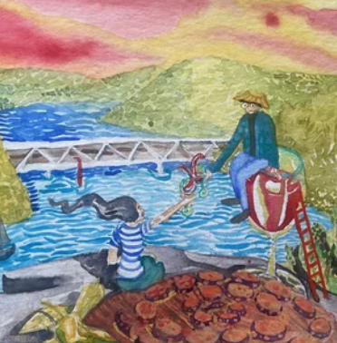
|
Jan 2025 A ("do you ever feel nothin'?")
- Real Life – The Marias
- Head in a Wheel – zzzahara
- Canada Dry – Matt Berry
- Big Booty – Moonchild Sanelly
- Shovel – Deep Sea Diver
- Like I Do – Tim Heidecker
- Big Dick Energy – Lambrini Girls
- Teach Me Tonight – Live at Sunset School – Erroll Garner
|
|
|
|
Dec. 2024 (Late) ("sin un momento de paz")
- New Delhi – Cannonball Adderley
- Big Dreams – Amyl and The Sniffers
- Cartagena – Reyna Tropical
- Disobedience – Kim Deal
- head empty blues – Ekko Astral
- (아일릿) 'Lucky Girl Syndrome' – ILLIT
- Bailing On Me – Amyl and The Sniffers
- Crystal Breath – Kim Deal
|
|
|
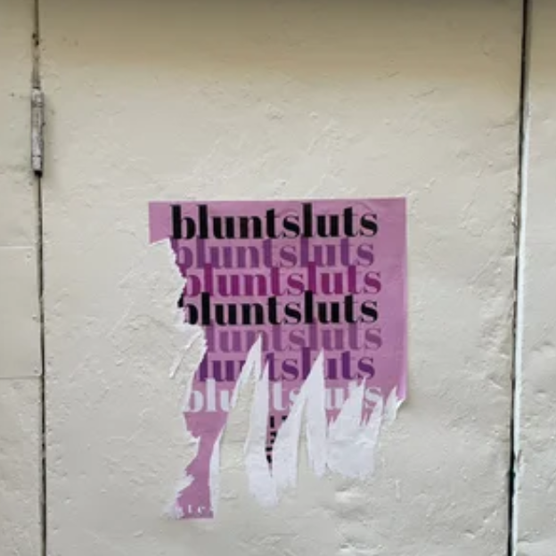
|
Dec. 2024 (Early) ("it's dazzling")
- Me jode – Las Dianas
- Sexy to Someone – Clairo
- Wish I Was – Kim Deal
- HIDE N SEEK – Doechii
- I Hope You Find Your Way Home – Tyler, the Creator
- Summerland – Kim Deal
- Balloon (feat. Doechii) – Tyler, the Creator, Doechii
- Your Furniture's Too Nice – Melissa Carper
|
|
|
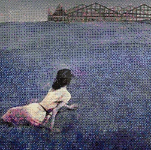
|
Nov. 2024 ("get ya whole life logged out")
- Aunque duela – shego
- Tropicana – Sinego, PAUZA, Cucu Diamantes
- Bullfrog – Doechii
- Espresso – Sabrina Carpenter
- Nighttime - Live – Oscar Peterson
- Nenuphar – Polo & Pan, I.M YONI
- Dourado Dourado – Bala Desejo, Dora Morelenbaum, Julia Mestre, Lucas Nunez, Zé Ibarra
- Strawberry Hill Descent – Ellen Reid, Nadia Sirota, Gabriel Cabezas
|
|
|
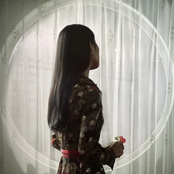
|
Oct. 2024 ("shed like loose skin")
- Yuki Ga Furu – Salvatore Adamo
- Down – St. Vincent
- Baile de Máscaras – Bala Desejo, Dora Morelenbaum, Julia Mestre, Lucas Nunez, Zé Ibarra
- Electric Fish – Ana Frango Eléctrico
- Send in the Clouds – Silver Jews
- Nenuphar – Sophia Chablau e Uma
- DEATH ROLL – Doechii
- Perfect Day – Karen O, Danger Mouse
|
|
|
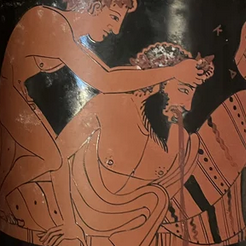
|
Sep. 2024 (Late)("em seu jardim")
- I'm Confessin' (That I Love You) – Thelonious Monk
- 69 année érotique – Serge Gainsbourg, Jane Birkin
- Menagerie – Monster Rally
- First Look / First Conversation / Walk Home Pt. 1 – Ty Segall
- Insista em Mim – Ana Frango Eléctrico
- Sucker – Madeline Kenney
- Clarity - Outerlude – Nubya Garcia
- Southern Nights – Allen Toussaint
|
|
|
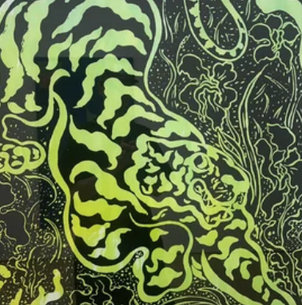
|
Sep. 2024 (Early)("you'll be alright")
- Easy Breezy – chelmico
- DENIAL IS A RIVER – Doechii
- Sleeping In – illuminati hotties
- That's My Floor – Magdalena Bay
- Death & Romance – Magdalena Bay
- 20200821 Cowboy Shit – Mac DeMarco
- BOOM BAP – Doechii
- One Last Dance – Baby Rose, BADBADNOTGOOD
|
|
|
|
Aug. 2024 ("a redneck squirrel")
- Touching Souls (feat. Meg Christian) – Kay Gardner
- Más o Menos – Fake Fruit
- Ring Finger – Lainey Wilson
- Jungle Fever – The Chackachas
- Image – Magdalena Bay
- Dorothy - Myd 10th Anniversary Edition – Polo & Pan, Myd
- Dry – Geneva Jacuzzi
- Love Is The Tune – Mary Lattimore
|
|
|
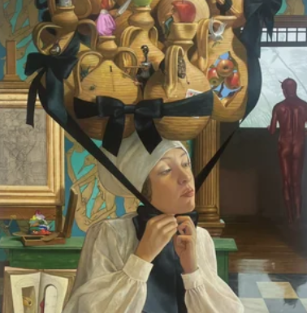
|
Jul. 2024 ("life is a glimpse")
- Spanish Flowers – Sprout House Band
- Fry Bread – Brightblack Morning Light
- São Paulo - 2018 Remaster – CHIC
- Soul Impressions – Janko Nilovic
- The Depth Of An Answer – Dumbo Gets Mad
- Manos En El Piso – Pj Sin Suela
- Sambop - 24-Bit Mastering – Cannonball Adderley, The Bossa Rio Sextet
- The Violence – Childish Gambino
|
|
|
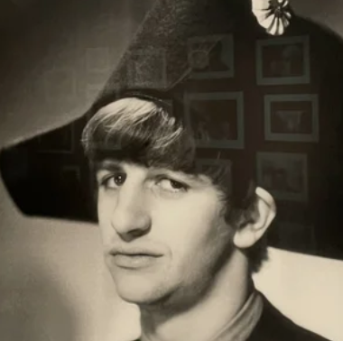
|
Jun. 2024 ("always should be")
- Venice – Cannonball Adderley, Bill Evans
- Dropout – Dirty Art Club, Zodiac Lovers, King Caiman
- Sunny – Boney M.
- Call U Up (feat. Lou Phelps) – KAYTRANADA, Lou Phelps
- You're My Flame – Zero 7, Sia
- Take Me to the River – Lorde
- Well Rested – Kero Kero Bonito
- Girls & Boys – Blur
|
|
|
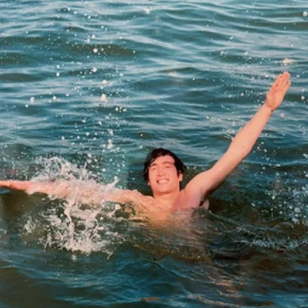
|
May 2024 ("once but twice")
- Accade a Harlem – Arawak
- I've Got Your Number – Ned Doheny
- Manhã – Azymuth
- Let's Dance Raw – Shintaro Sakamoto
- Keep Looking – Sade
- Song For My Father – Madlib, Sound Directions
- Pour Up – Yaya Bey, DJ Nativesun
- The Door – D'Angelo
|
|
|
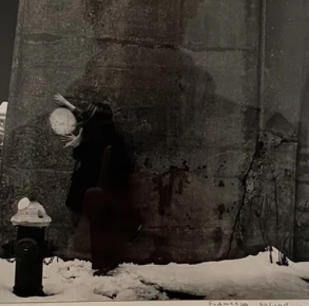
|
Apr. 2024 ("Dream | Scream")
- Things Fall Apart – Cristina
- Nice Mover – Gina X Performance
- Kiddan Zaalima – Vishal Mishra, Raj Shekhar
- Femenine – Empress Of
- Gary Ashby – Dry Cleaning
- He's So Sensitive – Love Child
- He Loves Me Yeah! – Faye Webster
- Tampico – Tito Puente & His Orchestra
|
|
|
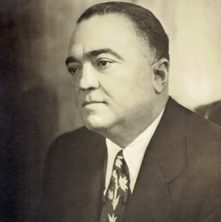
|
Mar. 2024 ("See. Look. Watch.")
- Nebulosa – Tenorio Jr.
- Minha Saudade – João Gilberto
- Volta – Gal Costa
- Sex on the Beach – 박혜진 Park Hye Jin
- Exhibitionism – Gina X Performance
- Polaris – Zero 7
- It's Gonna Be Lonely – Prince
- Whisper – Martin Rev
|
|
|
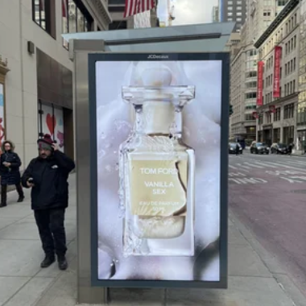
|
Feb. 2024 ("and we'll eat a lot")
- Musow Dance (Women's Dance) – Les Amazones d'Afrique Jr.
- Redondo Beach – Patti Smith
- Hello? – Clairo, Rejjie Snow
- Fil – Nathalie Joachim
- Out There – Helado Negro
- Ain't That The Way That It Goes – Gaby Moreno
- You're Blase - Live At The Alhambra/1961 – Ahmad Jamal
- Dance The Night Away – Gaby Moreno
|
|
|
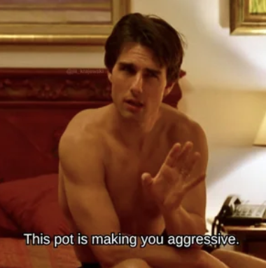
|
Jan. 2024 (Late) ("Jai Vin")
- Fin del Mundo – Ana Tijoux
- Sher Khul Gaye – Vishal-Sheykhar, Benny Dayal, Shilpa Rao, Mellow D
- Makai No Keiyaku – Yama Warashi
- Jeanne et Alain – The Offline
- Godzilla-1.0 Godzilla Suite III – Naoki Sato
- Gray Heron II – Joe Hisaishi
- Ji-Eun's Sunset – City Girl
- Punk Rock Loser – Viagra Boys
|
|
|
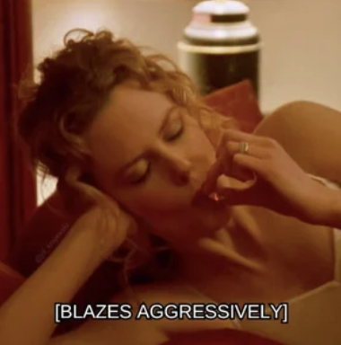
|
Jan. 2024 (Early) ("Winter Warmer")
- Brasil – Azymuth
- The Great Escape of Our Time – 椅子樂團 The Chairs
- The World Is Flat – Quilt
- X Marks The Spot – Jim Noir
- My Best Friend – Ty Segall
- Mood Macabre (Link) – Stan Tracy
- Hell – Sleater-Kinney
- Brazil – Geoff & Maria Muldaur
|
|
|
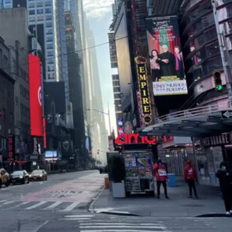
|
Dec. 2023 ("Bah Humbug")
- Cruel World – Lana Del Rey
- Shame – 2 Chainz, Lil Wayne
- Danger Modoh – Mister Modo, Ugly Mac Beer
- Can't Go Back, Baby – Troye Sivan
- Happiness – Goldfrapp
- Delicate – Taylor Swift
- Comp Time – Ahmad Jamal
- See You Again – Tyler, The Creator, Kali Uchis
|
|
|
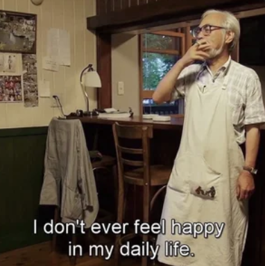
|
Nov. 2023 ("Seasonal Depression")
- AMIGOS NUEVOS – Ghouljaboy, shego
- ALMOND NO CHOCOLATE – Yura Yura Teikoku
- nijimu – OOIOO
- I'll Come Running – Brian Eno
- Hey – The Pixies
- Charanga – Polo & Pan, Les Poppys, Issac et Nora
- Oogum Boogum – Alex Chilton
- Autumn Leaves – Cannonball Adderley
|
|
|
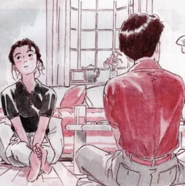
|
Oct. 2023 ("The Fun'll Go On")
- Bugs – Jamila Woods
- Belo Horizonte – Cari Cari
- New Year's UnResolution – L'Rain
- Rush – Troye Sivan
- Karma (feat. Ice Spice) – Taylor Swift, Ice Spice
- Golden – Cherry Glazerr
- Other World – Madeline Goldstein
- I Miss All My Exes – Jamila Woods, Gia Margaret
|
|
|
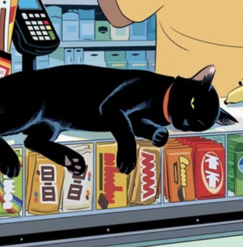
|
Sep. 2023 ("Go Buck Wild")
- ballad of a homeschooled girl – Olivia Rodrigo
- She's On My Mind – Romy
- CooCool – Róisín Murphy
- Bewitched – Laufy
- Enjoy Your Life – Romy
- Fin – Daniela Andrade
- Unwritten – Natasha Bedingfield
- Bad Idea Right – Olivia Rodrigo
|
|
|
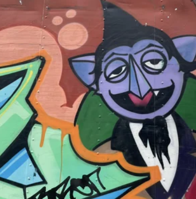
|
Aug. 2023 ("46, 47, 48 Minutes. Mwahaha!")
- I Got It Bad and Ain't that Good - December 14th. 1972 Hannover – Oscar Peterson
- Shoot Your Shot – Divine
- long interval – OGRE YOU ASSHOLE
- Ani Kuni – Polo & Pan
- First Slow – Courtney Barnett
- Become – Beach House
- Euphoria – Keiko Matsui, Joel Ross
- Reality Mind – Madeline Kenney
|
|
|
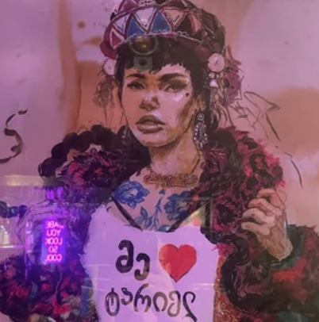
|
Jul. 2023 ("Georgian Cheeseboat")
- Taxi Talk – Nina Kraviz
- Moon Flower Bloom - Captain Planet's Dub Remix – Monster Rally, CAptain Planet
- Twin – Devendra Banhart
- Je veux mourir avec toi - Polo & Pan Remix – Antonin, Polo & Pan
- Dance The Night – Dua Lipa
- Rainbow Sweater – Liza Anne
- Frond Farewell – Monster Rally
- Ylang Ylang – FKJ, ((( O )))
|
|
|
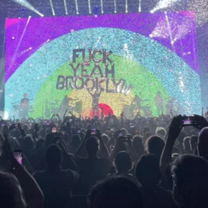
|
Jun. 2023 ("Canadian Bacon")
- Me and My Shadow – Peggy Lee
- Run, Run, Run – McKinley Dixon
- The L.S.A. Theme - Kognitif Remix – DEgiheugi, Kognitif
- Come Home To God – Amaarae
- Juramentos – La Villana
- Love Feel – Jenny Lewis
- Eat The Acid – Kesha
- But Not Kiss – Faye Webster
|
|
|
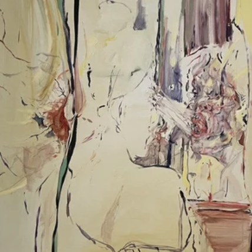
|
May 2023 ("Portuguese Man o'war")
- Sweet Lorraine – Oscar Peterson
- Listen To My Song – Darondo
- That! Feels Good! – Jessie Ware
- Natural's Not In It – Gang of Four
- Beautiful People – Jessie Ware
- Quando Quando – The Avenir, Waldeck Patrizia Ferrara
- So Hard So Hot – Alison Goldfrapp
- Dream Free – Sam Evian, Hannah Cohen
|
|
|
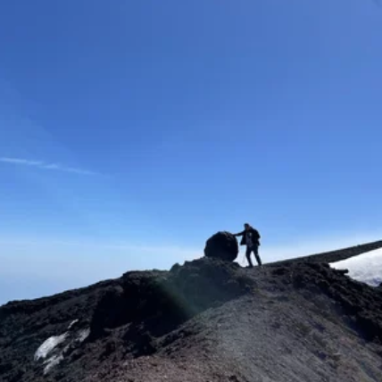
|
Apr. 2023 ("Unlikely")
- Of Womankind – Feist
- 1 Thing To Smash – Yaeji, Loraine James
- Tienaté – Nu Genea
- Sweet – Oscar
- Fade Out Lines - The Avener Rework – The Avener, Phoebe Killdeer
- I Need Love – Barbara Mason
- [...] – OGRE YOU ASSHOLE
- Alter Ego – El Michels Affair, Black Thought, Brainstory
|
|
|
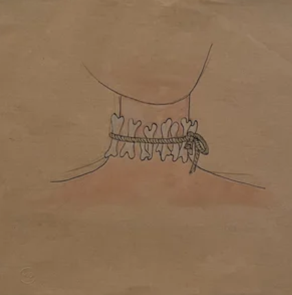
|
Mar. 2023 (Late)("Retire the Bit")
- Terror – Tianna Esperanza
- steak tar tar – shego, DRUMMIE
- The Thrill Is Gone. – RAYE
- Fever – Alison Goldfrapp, Paul Woolford
- T.M.I. – Meet Me @ The Altar
- Shiver –Fever Ray
- Pyjamas (feat. Remi Wolf) – Benny Sings, Remy Wolf
- Let The Light In (feat. Father John Misty) – Lana Del Rey, Father John Misty
|
|
|
|
Mar. 2023 (Early)("tragiquement")
- Find Out – Liv.e
- All Mine – Kali Uchis
- Late Night People – Yazmin Lacey
- Being Human – Jen Cloher
- Tux (Your Body Fills Me, Boo) – U.S. Girls
- me lloro toda – shego
- So Typically Now – U.S. Girls
- Mana Takatāpui – Jen Cloher
|
|
|
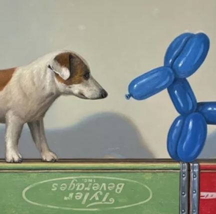
|
Feb. 2023 ("Wine, Year")
- Worth It. – RAYE
- Buana Buana King Kong (Live Montreaux Jazz Feltival 1984) – Paco de Lucia
- This Is Why – Paramore
- Renaissance (Main Title Theme) - from The White Lotus Season 2 – Christobal Tapia De Veer
- Sunset – Caroline Polachek
- You Up? – Yaya Bey
- Washed Away – Kelela
- Felt Tip Pen – SEATBELTS
|
|
|
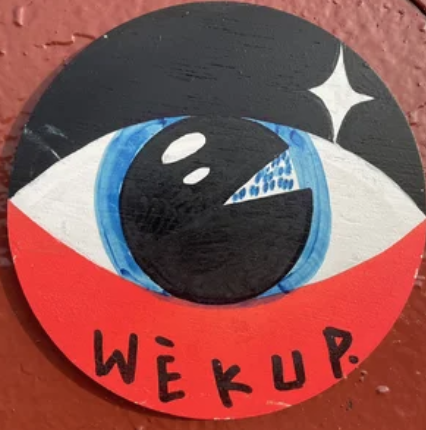
|
Jan. 2023 ("Because I'm Nice")
- Vancouver 3 – Mac Demarco
- The Worst Is Done – Weyes Blood
- For Granted – Yaeji
- Losing Touch (NYC) – thanks for coming
- Do You Follow – Belle and Sebastian
- Too Up – LAYA
- In Holy Flux – Weyes Blood
- Girl Talk – Fred Hersch, Esperanza Spalding
|
|
|
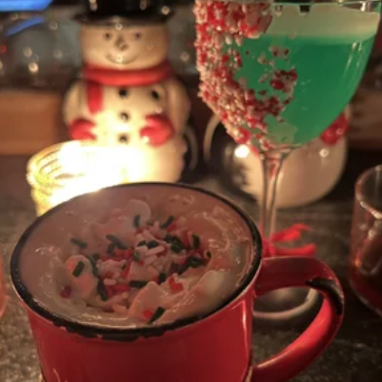
|
Dec. 2022 ("Merry Happy")
- He Needs Me – The A's
- shooter interlude – Kehlani
- GHETTO GATSBY (FEAT. ALICIA KEYS) – Brent Faiyaz, Alicia Keys
- ABCs of New York – Princess Nokia
- Flying – The Beatles
- Atemporal – Lucrecia Dalt
- Compassion (feat. Chiiild) – Lucky Daye, Chiiild
- How Deep Is Your Love – Bee Gees
|
|
|
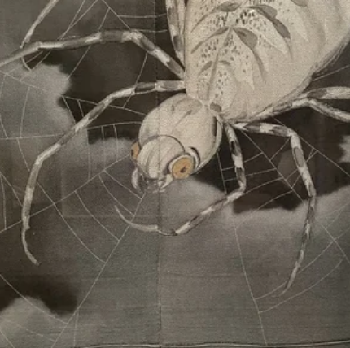
|
Nov. 2022 ("Reading at Troost")
- You're No Good – ESG
- Ice Cold Daydream – Shuggie Otis
- Mine – Gustaf
- Trem Fantasma – Os Mutantes
- Fire in the Western World – Dead Moon
- Mississippi Delta – Bobbie Gentry
- Can You Get To That – Funkadelic
- Com Mais De 30 – Claudya
|
|
|
|
Oct. 2022 ("swoon")
- Firefly – The Black Angels
- Vigilante Shit – Taylor Swift
- Greenpoint Gothic – Deerhunter
- Witness – Santigold
- Inside Out – Queen Latifah
- AKUMA GA BOKU WO – Yura Yura Teikoku
- Manhattan Reflections - Live (feat. Chiiild) – Ahmad Jamal
- Down and Out Downtown – St Vincent
|
|
|
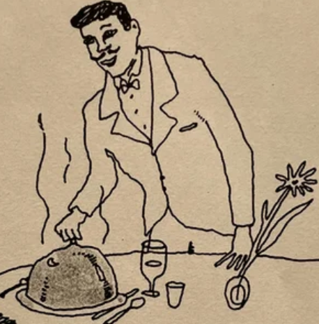
|
+1 – Sep. 2022 ("bon appétit")
- Roja De Celos – Paco de Luía, Ramón Algeciras
- Words and Guitar – Sleater-Kinney
- Selfish Soul – Sudan Archives
- Future Is Uncertain – Tim Heidecker
- No Hay Ley – Kali Uchis
- Lobbo – Vieux Farka Touré, Khruangbin
- Milk Me – Sudan Archives
- Somethin' Stupid (with Frank Sinatra) – Nancy Sinatra
- Swingin Party – The Replacements
|
|
|
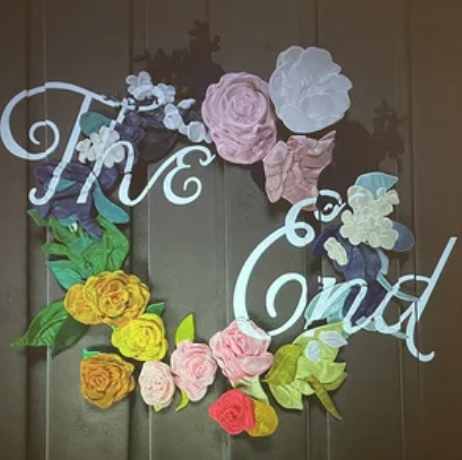
|
Aug. 2022 ("sigh")
- New Breakfast Habit – Andrew Tuttle, Luke Schneider, Darren Cross
- Game of Cards – Katy J Pearson
- Belize (feat. MF DOOM) – Danger Mouse, Black Thought, MF DOOM
- Club Nine – Nicolas Godin
- don't fucking call me – Yaya Bey
- Beatopia Cultsong – beabadoobee
- Take My Hand – Matt Berry
- Orca – Nicolas Godin
|
|
|
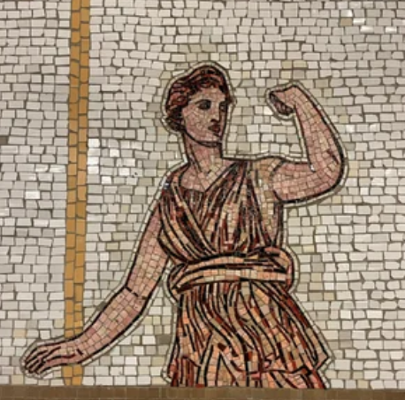
|
Jul. 2022 ("Boring Old Worlds")
- Talk Over Town – Katy J Pearson
- Sweet And Lovely – Errol Garner
- Grassy Crystals – Monster Rally
- keisha – Yaya Bey
- 2Gether (Enterlude) – Steve Lacy, Matt Martians
- Howl – Katy J Pearson
- Billions – Caroline Polachek
- Right Now – Angel Olsen
|
|
|
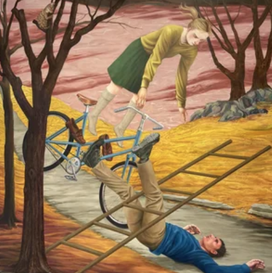
|
Jun. 2022 ("Thanks Hollywood")
- meet me in brooklyn – Yaya Bey
- Pablo Picasso – The Modern Lovers
- Highest Bidder – Fantastic Negrito
- Sirens of Titan – Tim Heidecker, Kurt Vile
- 10% (feat. Kali Uchis) – KAYTRANADA, Kali Uchis
- Us – FKJ
- Love in the Dark – Hollie Cook
- I'm Waiting for the Man - May 1965 Demo – Lou Reed
|
|
|
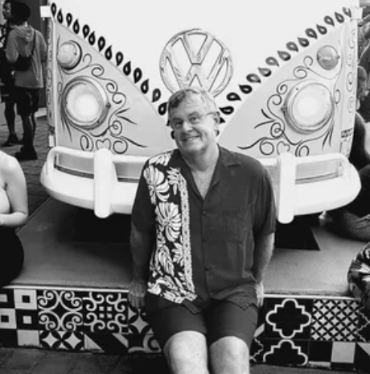
|
May 2022 ("Stop, Look & Listen")
- Let's Live For Today – The Grass Roots
- Hyena - 2011 Remaster – R.E.M.
- zzz #arabesque – HARU NEMURI
- Southeast to Paris – IDK
- Porpoise Song – The Monkees
- Easy Goes It (feat. Lalah Hathaway) – Tank and The Bangas, Lalah Hathaway
- Sushi - Live at Gasteig, Munich / July 22, 1998 – Oscar Peterson
- Cheers (To You & Me) – Faye Webster
|
|
|
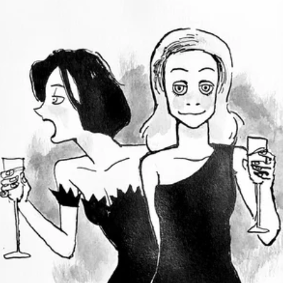
|
Apr. 2022 ("A Pint of Cold Gin at Bemelmans")
- No Sé Muy Bien – Lisasinson
- Dreamin Of The Past (feat. Kanye West) – Pusha T, Kanye West
- BOMBAY – Girl Ultra
- Last Year – Toro y Moi
- Linda – Tokischa, ROSALÍA
- Defend – Original Koffee
- Chloë – Father John Misty
- He Needs Me – Punch-Drunk Love
|
|
|
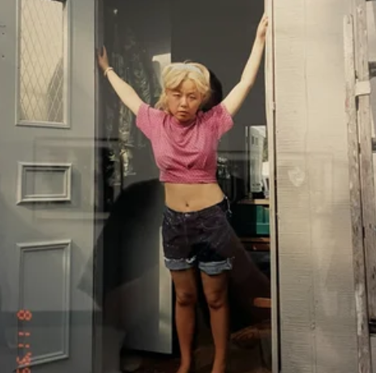
|
Mar. 2022 ("SS 2022")
- Two Worlds Apart – Little Simz
- Wish Someone Would Care – Irma Thomas
- Santé – Stromae
- SAOKO – ROSALÍA
- New Shapes (feat. Christine and the Queens and Caroline Polachek – Charli xcx, Christine and the Queens, Caroline Polachek
- Silver Into Rain – Luna Li, beebadoobee
- Blue – KAINA, Helado Negro
- Poor People – Alan Price
|
|
|
|
Feb. 2022 ("Lunch Break")
- Up All Night – SAULT
- Better Living Through Chemistry – Ex-Cult
- Woodland Rock – T. Rex
- The Words That Maketh Murder – PJ Harvey
- POINTED AT THE SUN – Hurray For The Riff Raff
- It's Over – Ty Segall
- Wheel – Cate Le Bon
- I've Got A Feeling - Rooftop Performance / Take 1 – The Beatles
|
|
|
|
Jan. 2022 ("New Home")
- Come On In – Lady Wray
- Cruisin' – D'Angelo
- Mo Money Mo Problems (feat. Puff Daddy & Mase) – The Notorious B.I.G., Mase, Diddy
- My Girl - Summer of Soul Soundtrack - Live at the 1969 Harlem Cultural Festival – David Ruffin
- Rockers To Swallow – Yeah Yeah Yeahs
- Make Me Fade – K.Flay
- One Thing – Beach House
- The Birthday – Hospitality
|
|
|
|
Dec. 2021 ("A Bad Season")
- la kiero a morir – shego
- Dark Spring – Beach House
- No Novelty – Nots
- The Slider – Ty Segall
- Haunting at 1300 McKinley – The Black Angels
- telepatía – Kali Uchis
- Savage Night at the Opera – Destroyer
- White Window Light – Madeline Kenney
|
|
|
|
Nov. 2021 ("The Flight")
- Colouour – Moses Sumney
- Slow Burn – Citizen Queen
- Room Temperature – Faye Webster
- Rockferry – Duffy
- Flipping Poles – Connan Mockasin
- Ante Meridiem – Men I Trust
- Feel You – My Morning Jacket
- Polka Dots and Moonbeams – Bill Evans Trio
|
|
|
|
Oct. 2021 ("Shane's Cat")
- Oogum Boogum Song – Brenton Wood
- Alone – Lily Konigsberg
- f*ckthat – IAN SWEET
- Sleep Walk – Jeff Beck
- Better Distractions - Recorded at Electric Lady Studios – Faye Webster
- We'll Meet Again – Johnny Cash
- Merry-Go-Round Broke Down – Carl Johnson
- Cool Walk - Live – Oscar Peterson
|
|
|
|
Sep. 2021 ("Beaujolais Season")
- Black Myself – Amythyst Kiah
- Can't Get There From Here – R.E.M.
- Enter Sandman – Mac DeMarco
- Music Life – Mia Dodd Todd, Jeff Parker, Money Mark
- Pressure – Photay
- Tunnel - Samaran Remix – Polo & Pan, Channel Tres, Samaran
- My Cherie Amour – Stevie Wonder
- More Big Birds – Dry Cleaning
|
|
|
|
Aug. 2021 ("Some Summer")
- Sous le soleil exactement – Michel Colombier
- Tonight – Katy J Pearson
- Pinball – Zastoupil
- Piña Collider – Spaceface
- Feel Good – Ty Segall, Denée Segall
- Goodbye My Love (feat. Priya Ragu) – Jungle, Priya Ragu
- Disappearing – Low
- Truth – Madeline Kenney
|
|
|
|
Jul. 2021 ("Fuligin Summer")
- Chaise Longue – Wet Leg
- Gemini and Leo - Edit – Helado Negro
- Juban District – Ginger Root
- 昼間から夜 – Mei Ehara
- Better Distractions – Faye Webster
- Feel Good – Polo & Pan
- Summer Sun – Matt Berry
- 第三の男 – Ren Takada
|
|
|
|
Jun. 2021 ("Summer Fun")
- Try... Die! – Hey Cowboy!
- High In The Grass – Sleater-Kinney
- Yung Dicaprio – The Zolas
- Catapult – R.E.M.
- Anything at All – Bachelor, Jay Som, Palehound
d4bydCpVl3E
- jealousy, jealousy – Olivia Rodrigo
- Solar Power – Lorde
- Placement and Longing, Pt. 2 – Allison Philips Trio, Alison Philips
|
|
|
|
8 Tracks – May 2021
- Price of Blue – Flock of Dimes
- Special Girl – dodie
- Ready for Tomorrow – Babe Rainbow
- Vicente Amor – shego
- Out East – L'Orange, Namir Blade
- Theme Vision – Bruno Pernadas
- On a Clear Day (You Can See Forever) – Oscar Peterson Trio
- Bip Burger – BIP LING
|
|
|
|
8 Tracks – Apr. 2021
- Walk On The Wild Side - Pt. 1 – Jimmy Smith
- Mango – The Orielles
- Cherry – Anna Fox Rochinski
- Pipe Dreams – Caroline Rose
- Leafy – Dry Cleaning
- Rolled Up – Benny Sings, Mac DeMarco
- Makes You Fly – Dumbo Gets Mad
- Beyond the Son – Koop, Earl Zinger
|
|
|
|
8 Tracks – Mar. 2021
- My Favorite Cloud – IAN SWEET
- Found Me – Men I Trust
- Little Johnny Jewel - Parts 1 & 2 – Television
- No Novelty – Nots
- Party Down - Pt. 2 – Little Beaver
- Pay Your Way In Pain – St. Vincent
- Sword – IAN SWEET
- (Don't Go Back To) Rockville – R.E.M.
|
|
|
|
8 Tracks – Feb. 2021
- Blasphone – Magrot
- Chemicals – SG Lewis
- Soft Parade – Vulfpeck
- I'm Good - Louie Lastic & Billy Davis Remix – Wafia, Louie Lastic, Billy Davis Remix
- Good Time Girl – Sofi Tucker, Charlie Barker also
- Feel It Still - ZHU Remix – Portugal. The Man, ZHU
- Sugar Sweat – Madeline Kenney
- No Better – Anna Fox Rochinski
|
|
|
|
8 Tracks – Jan. 2021
- Makin' Whoopee - Live At The Tivoli Gardens, Copenhagen / 1979 – Oscar Peterson, Stéphane Grappelli, Joe Pass, Mickey Roker, Niels-Henning Ørstead-Pedersen
- Incapable – Róisín Murphy
- I Zimbra - 2005 Remaster – Talking Heads
- Funky Fanfare – Keith Mansfield
- Long Tailed Winter Bird – Paul McCartney
- New Thang – Kari Faux
- Jump into the Fire – Heather Trost
- Underneath The Bunker - 2011 Remaster – R.E.M.
|
|
|
|
8 Tracks – Dec. 2020
- WAKATTE HOSHII – Yura Yura Teikoku
- Pilgrimage – R.E.M.
- Sleepless – Magrot
- Look Over Your Shoulder (feat. Kendrick Lamar) – Busta Rhymes, Kendrick Lamar
- la luna enamorada – Kali Uchis
- We Are the Sun – SAULT
- Fear of Death – Tim Heidecker
- Blossom in a Stormy Night – Chien Chien Lu
|
|